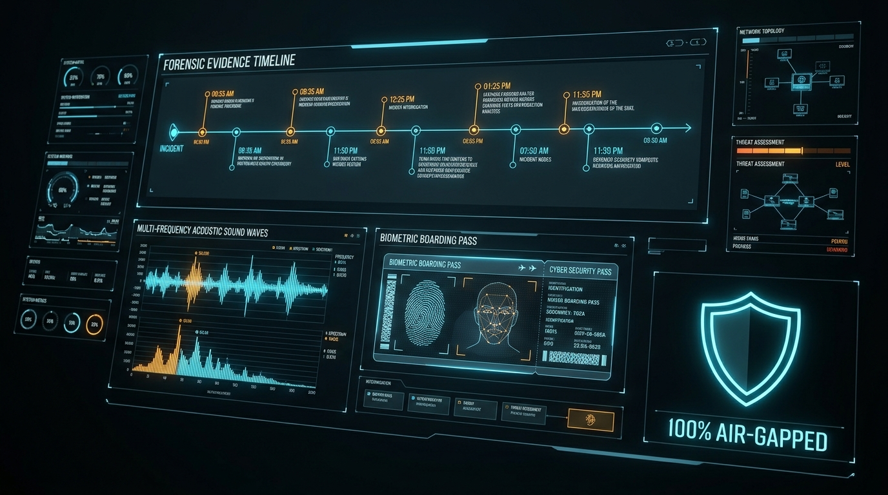

AEGISDESK
100% Air-Gapped Multimodal Forensic Investigator
Cross-examining audio interrogations, flight manifests, hotel surveillance, and encrypted chat dumps to uncover perjury and alibi contradictions—entirely offline on consumer CPU.

The $Billion Confidentiality Paradox
Investigators have massive multimodal evidence, but cannot touch cloud LLMs.
- Privilege Waiver: Uploading confidential legal depositions waives attorney-client work-product privilege in court.
- Data Leakage & Subpoena Risk: Sensitive whistleblower audio and trade secrets stored on third-party cloud servers.
- Evidence Contamination: Cloud models are non-deterministic black boxes that fail court chain-of-custody standards.
- Connectivity Dependency: Defense rooms, submarines, and secure SCIFs have zero internet access.
- Absolute Privilege: All data, audio, and reasoning stay on local memory; zero bytes egress the machine.
- Active Hardware Isolation: Process socket monitoring verifies zero network traffic during analysis.
- Verifiable Chain of Custody: Every document and audio file is cryptographically sealed with SHA-256 hashes.
- Consumer Hardware Native: Optimized CPU quantization runs on ordinary field laptops (2 cores, 16GB RAM).
The 100% Offline Forensic Pipeline
Coordinating small open-weight language models and specialized extractors into a unified local stack.
Case Study: "Operation Nightfall"
How AegisDesk disproves an ironclad perjury alibi by cross-referencing 4 conflicting sources.
The Automated Contradiction Matrix
Precision quote comparison with forensic reasoning and severity scoring.
Reconstructed Master Timeline
Harmonizing scattered, heterogeneous timestamps into an unbroken sequence of facts.
Edge Performance on Consumer Hardware
Proving that sophisticated multimodal AI does not require enterprise data centers.
The Future of Sovereign Legal AI
Democratizing elite investigative intelligence for every defender, journalist, and auditor.